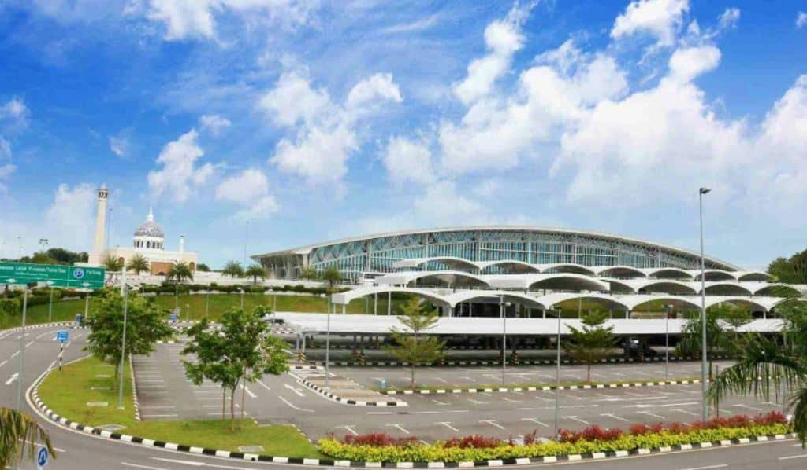

Getting Here
Brunei Darussalam can be reached by air, land and sea. Visitors arriving by air can travel through Brunei International Airport, located near Bandar Seri Begawan.
Travellers should check passport, visa and entry requirements before planning their journey.